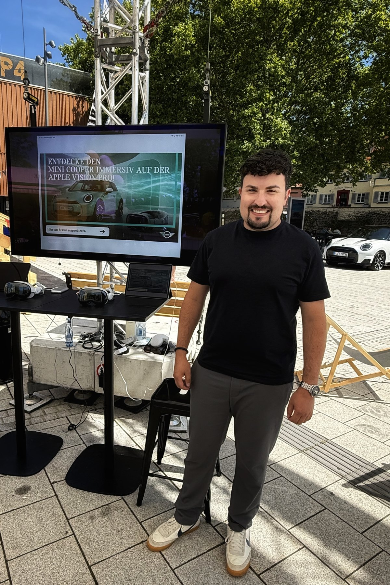
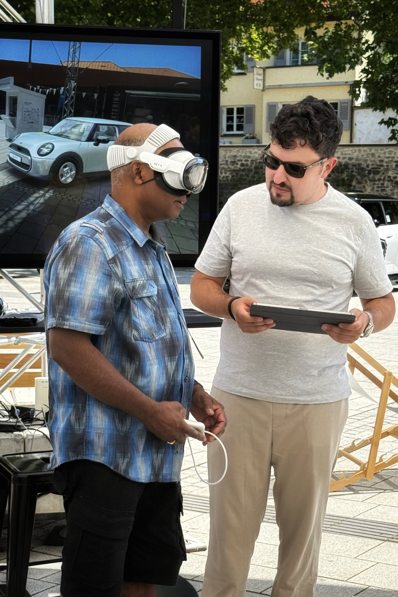

Tinkering & homelab
Self-hosted tools, home servers, and projects such as managing my own photo storage. Part practical, part an excuse to learn how something works.

Hi, I’m Philip. I build digital products, explore new ideas, and enjoy finding out what happens when they meet the real world. Away from work, that same instinct takes me from homelab projects to gravel rides and places I haven’t been before.
German–Brazilian
Shaped by travels around the world.

01 Work

I like taking an idea, turning it into something tangible, and finding out whether it works for the people it’s meant for. Digital products, experimentation, and AI are all part of that interest. Building is rewarding; seeing what customers actually do with it is where things get interesting.
Previously at BMW.
Professional details on LinkedIn02 Play
Sometimes I have an idea. Sometimes I see a project online and immediately want to understand how it works. Either way, there’s a fair chance I’ll try building it.
Self-hosted tools, home servers, and projects such as managing my own photo storage. Part practical, part an excuse to learn how something works.
Board games, video games, card games, and pétanque—especially when there’s a strategy to explore, a system to understand, or another approach to try.

Gravel cycling, new places, and a camera along the way. I enjoy a little adventure and the chance to notice something I would otherwise have missed.

Spielkind aus Leidenschaft.
03 Life
I was born in Germany and hold German and Brazilian nationality. Both are part of who I am: I appreciate punctuality and doing things properly, alongside a relaxed outlook and a little Brazilian jeitinho when a situation calls for ingenuity.
Family, my dog, and time away from a screen are part of the picture too.


Contact
For a professional connection,
a shared interest, or a good conversation.